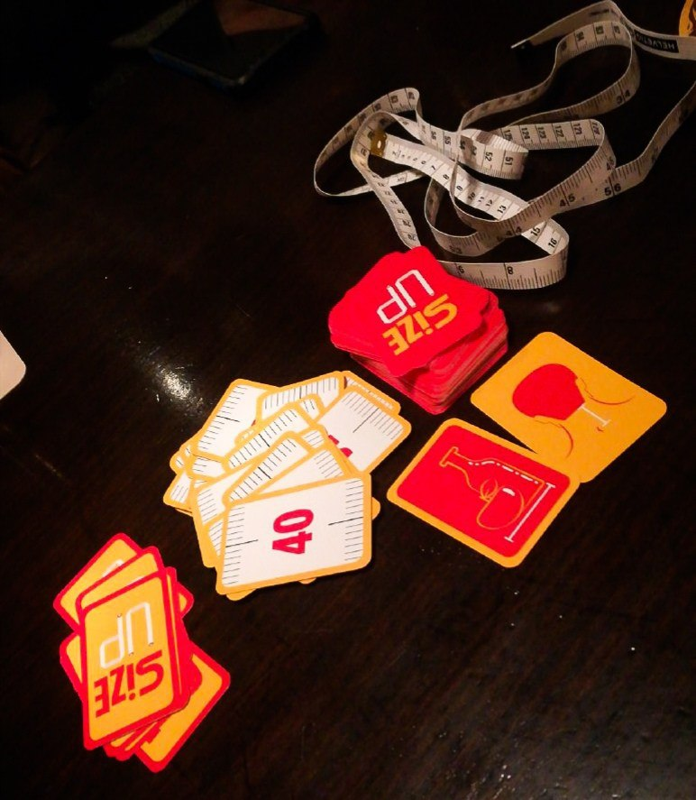

SIZE UP

15/20 minuti 2-10 7+
Size Up, il gioco delle misure. Sfida tutti i tuoi amici, indovina le dimensioni degli oggetti
che
hai intorno. Per vincere, devi essere il primo giocatore a raccogliere 5 carte sfida avvicinando le stime di misurazione
alla realtà.
Il concetto è semplice. Stima la lunghezza del mignolo di tua nonna, la larghezza del tuo biglietto del treno o la
circonferenza di una carota. Il metro a nastro viene utilizzato per verificare le stime successivamente.
Chi ha il miglior senso delle proporzioni vince.
RECENSIONE
Il gioco è molto semplice per quanto riguarda la spiegazione. Mette alla prova il tuo senso di misurazione e la conoscenza delle varie scale di misura. È un gioco particolare e attraente soprattutto a chi piace scommettere.